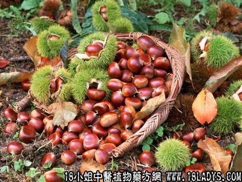

古籍名：风栗壳《名医别录》。
植物名：栗。
生长环境：本品为落叶乔木。阳性树种，多栽种于山地向阳山坡、土质疏松的山坡。
分布：原产于我国西部，现各省都有，广东以北江和西江一带为较常见的果树。
入药部分：果外壳。
采集期：秋季。
自采地点：家种。
性味：性平、味苦。
功能：除痰止咳。
主治、用量和用法：1、痰火核，配伍用；2、鸡咳，配伍用；3、痄腮，配伍用。
验方1（治鸡咳方）：风栗壳5钱、粟米须3钱、糖冬瓜5钱、清水二碗，煎成一碗，分三次服。
（方解）：民间用栗壳治咳除痰，配糖冬瓜取其润心肺，粟米须清热利尿，组成为润心肺、清热、止咳、除痰之剂。小儿鸡咳服之有效，为经验良方。
（方歌）鸡咳频频面发红，风栗壳同粟米须，糖冬瓜和清水煎，清心润肺咳渐松。
验方2（治痰火核痄腮方）：风栗壳5钱、夏枯草5钱、千层纸3钱、屈头鸡5钱、清水二碗半，煎成一碗服。
（方解）：本方风栗壳、屈头鸡除痰降火，千层纸除痰，夏枯草散结、消瘰疬、结核、痄腮等有效。
（方歌）痰火核兼痄腮生，风栗壳同夏草烹，屈头鸡千层纸，软坚化痰莫等闲。